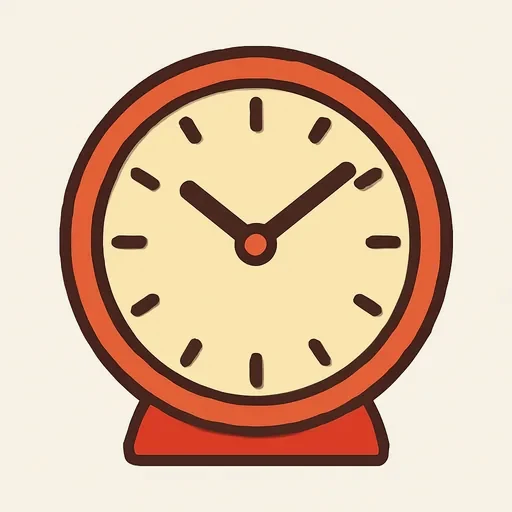
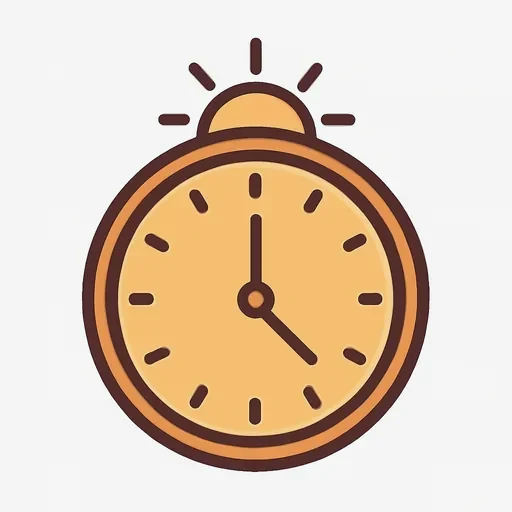

Черновик: урок написан, но преподаватель его ещё не вычитал.
Semana 9 · Día 1 — ¿Qué hora es?
Неделя 9 · День 1 — Который час?
Сегодня вы научитесь
- спрашивать и говорить, который час: Es la una, Son las tres y media;
- говорить, во сколько что-то происходит: a las ocho de la mañana;
- читать расписание на вокзале — и в 24-часовом виде, и в разговорном.
1. Разминка (0–3 мин)
- Карточки: 10 слов (вчерашние и недельной давности).
- Посчитайте вслух от uno до doce и обратно. Сегодня эти двенадцать числительных будут в каждой фразе — они должны выходить без паузы.
- Вопрос по прошлой неделе: ¿Dónde está la estación? — ответьте вслух.
2. Фонетика (3–6 мин)
Дифтонги ie / ue / ua в часах. Два гласных рядом — это один слог, а не два: первый звук короткий, скользящий. Прочитайте вслух:
siete · nueve · diez · cuatro · cuarto · media · veinte · veintiúno
- siete = [СЬЕ-те], два слога, а не [си-Э-те].
- nueve = [НУЭ-ве], где «у» короткое, как английское w: [nwé-βe].
- Самая опасная пара недели — cuatro (четыре) и cuarto (четверть). Разница в одной букве и в одном звуке: las cuatro (4:00) ≠ y cuarto (+15 минут). Прочитайте десять раз подряд: las cuatro y cuarto.
Запишите все восемь слов и пару cuatro / cuarto, сравните с записью.
3. Новое (6–16 мин)
Пример
Новые герои этой единицы: Javier, из Севильи, и Olga, из Москвы. Они
познакомились в сети и теперь сравнивают свои дни. Первый видеозвонок.
[AUDIO]
| Español | Русский |
|---|---|
| Olga: ¡Hola, Javier! ¿Qué hora es en Sevilla? | Привет, Хавьер! Который час в Севилье? |
| Javier: Son las nueve de la noche. ¿Y en Moscú? | Девять вечера. А в Москве? |
| Olga: Aquí son las once. En invierno Moscú va dos horas por delante. | Здесь одиннадцать. Зимой Москва на два часа впереди. |
| Javier: ¿Las once? ¡Es muy tarde! Mi familia cena ahora, a las nueve y media. | Одиннадцать? Это очень поздно! Моя семья ужинает сейчас, в половине десятого. |
| Olga: ¡A las nueve y media! Yo ceno a las siete. | В половине десятого! Я ужинаю в семь. |
| Javier: ¿Y a qué hora entras en la oficina? | А во сколько ты приходишь в офис? |
| Olga: A las nueve en punto. Y trabajo hasta las seis. | Ровно в девять. И работаю до шести. |
| Javier: Yo entro a las nueve menos cuarto, pero la comida es a las dos. | Я прихожу без четверти девять, но обед в два. |
| Olga: ¿La comida a las dos? Aquí la comida es a la una. | Обед в два? Здесь обед в час. |
| Javier: Pues en Moscú ya es tarde. ¡Buenas noches, Olga! | Ну, в Москве уже поздно. Доброй ночи, Ольга! |
Прочитайте вслух. Обратите внимание на одну вещь: девять часов — son las nueve, а один час — es la una. Глагол меняется.
Объяснение
По-русски время — это существительное с числом, и глагола нет совсем:
«Два часа», «Одиннадцать часов», «Половина третьего». По-испански время — это
глагол ser плюс артикль la / las, а само слово hora в ответе не
повторяется: Son las dos — буквально «есть (эти) два». Поэтому в испанской
фразе о времени всегда есть глагол, и он один — ser.
| Сколько | Испанский | Почему |
|---|---|---|
| 1:00 | Es la una. | один час — единственное число: es + la |
| 2:00 — 12:00 | Son las dos / las siete / las doce. | много часов — множественное: son + las |
Минуты. До половины — через y; после половины — через menos, и час уже следующий:
| Время | Испанский |
|---|---|
| 3:05 | Son las tres y cinco |
| 3:15 | Son las tres y cuarto |
| 3:30 | Son las tres y media |
| 3:40 | Son las cuatro menos veinte |
| 3:45 | Son las cuatro menos cuarto |
| 4:00 | Son las cuatro en punto |
Внимание на стыке: 12:45 = Es la una menos cuarto — час следующий, значит снова единственное число, снова es la una.
🌎 В Латинской Америке часто говорят по-другому: Son las tres cuarenta y cinco или Faltan quince para las cuatro. В Испании — las cuatro menos cuarto. Понимать надо оба, говорить — как удобнее.
Часть дня. Испанский не говорит «15 часов» в разговоре: он говорит «три» и добавляет, каких именно:
| Испанский | По-русски | Цифрами |
|---|---|---|
| las ocho de la mañana | восемь утра | 8:00 |
| las cuatro de la tarde | четыре дня | 16:00 |
| las once de la noche | одиннадцать вечера | 23:00 |
| las tres de la madrugada | три ночи | 3:00 |
| el mediodía / la medianoche | полдень / полночь | 12:00 / 24:00 |
Во сколько? Вопрос — ¿A qué hora?, ответ — тот же артикль с предлогом a:
| Вопрос | Ответ |
|---|---|
| ¿Qué hora es? | Son las dos. (Который час? — Два.) |
| ¿A qué hora comes? | A las dos. (Во сколько ты обедаешь? — В два.) |
| ¿A qué hora es la clase? | A la una. (Во сколько занятие? — В час.) |
Расписание (24 часа). На вокзале, в кино и в объявлениях пишут 24 часа и читают числа просто, без y и menos:
| Пишут | Расписание | В разговоре |
|---|---|---|
| 14:30 | las catorce treinta | las dos y media de la tarde |
| 20:15 | las veinte quince | las ocho y cuarto de la tarde |
| 22:45 | las veintidós cuarenta y cinco | las once menos cuarto de la noche |
⚠️ Контраст с русским
- В русском ответ о времени — без глагола и без артикля: «Два часа», «Без четверти три», «Половина третьего». Слово «часа / часов» произносится, а глагола нет.
- В испанском наоборот: глагол ser и артикль обязательны, а слово hora в ответе исчезает. И число в ответе — то, которое уже прошло: 2:30 — это las dos y media («два с половиной»), а не «половина третьего».
- Вы захотите сказать: ✗ Es las dos. ✗ Son la una. ✗ Son las tres y media про 2:30 (калька с «половина третьего»). ✗ Son dos horas. → Правильно: ✅ Son las dos. ✅ Es la una. ✅ Son las dos y media = 2:30. ✅ Son las dos. Проверка на каждую фразу: один час — es la, все остальные — son las.
Что помогает: вторая половина системы у вас уже есть. «Без четверти три» устроено ровно как las tres menos cuarto: «без» = menos, и час в обоих языках — следующий. Эту часть не надо учить, её надо просто перевести.
4. Практика (16–26 мин)
Упражнение А. Напишите время словами.
Модель: 3:15 → Son las tres y cuarto.
- 1:00 → · 2. 5:00 → · 3. 7:30 → · 4. 9:15 → ·
- 10:45 → · 6. 12:00 → · 7. 2:20 → · 8. 4:50 → ·
- 6:05 → · 10. 1:30 → · 11. 12:40 → · 12. 11:25 →
Упражнение Б. Дополните диалог. Слова можно брать больше одного раза. Банк слов:
a · a la · a las · es · son · y cuarto · y media · menos cuarto · en punto · de la tarde
Olga: ¿Qué hora 1 en Sevilla? Javier: 2 las tres 3 [15:15]. ¿Y en Moscú? Olga: Aquí 4 las cinco 5 [17:30]. ¿Comes ahora? Javier: No, la comida 6 a las dos. Ahora, un café. Olga: ¿7 qué hora entras en la oficina? Javier: 8 nueve 9 [8:45]. ¿Y tú? Olga: Yo entro a las nueve 10 [9:00] y trabajo hasta las seis 11 [18:00].
Упражнение В. Переведите на испанский.
- — Который час? — Половина десятого. (9:30)
- Сейчас без четверти восемь.
- Ровно час.
- — Во сколько ты обедаешь? — В два.
- Поезд в 16:20 (скажите два раза: как в расписании и как в разговоре).
- В Москве одиннадцать вечера, а в Севилье девять.
- Аптека открывается в девять утра.
- Без двадцати пяти четыре. (3:35)
5. Выход (26–29 мин)
Назовите время на 12 часах и прочитайте 6 расписаний поездов.
Двенадцать часов (показания циферблатов) — назовите каждое вслух и запишите словами:
1) 7:00 · 2) 1:00 · 3) 4:30 · 4) 11:15 · 5) 2:45 · 6) 12:00 · 7) 9:20 · 8) 6:55 · 9) 3:05 · 10) 10:40 · 11) 5:35 · 12) 8:10
Шесть поездов (табло учебное, не настоящее). Каждую строку скажите двумя способами: как в расписании (las nueve cuarenta y cinco) и как в разговоре (las diez menos cuarto de la mañana):
| Tren | Destino | Salida (отправление) | Llegada (прибытие) |
|---|---|---|---|
| 1 | Madrid | 7:30 | 10:00 |
| 2 | Barcelona | 9:45 | 15:20 |
| 3 | Valencia | 12:00 | 16:10 |
| 4 | Sevilla | 14:15 | 16:45 |
| 5 | Málaga | 18:30 | 21:00 |
| 6 | Bilbao | 22:25 | 7:05 |
6. Итог (29–30 мин)
- [ ] Я спрашиваю и говорю, который час, с ser и артиклем.
- [ ] Я помню, что один час — es la una, а всё остальное — son las…
- [ ] Я читаю расписание на 24 часа и перевожу его в разговорное время.
- Добавьте слова дня в колоду карточек.
Словарь дня
| Español | Русский | Пример |
|---|---|---|
| ¿Qué hora es? | Который час? | ¿Qué hora es? — Son las dos. |
| la hora | час; время | ¿A qué hora comes? |
 el reloj |
часы (прибор) | El reloj está en la pared. |
| y cuarto | четверть, плюс 15 минут | Son las tres y cuarto. |
| y media | половина, плюс 30 минут | Son las siete y media. |
| menos cuarto | без четверти | Son las ocho menos cuarto. |
| en punto | ровно | A las nueve en punto. |
| ¿A qué hora? | Во сколько? | ¿A qué hora es la clase? |
 el mediodía |
полдень | La comida es a mediodía. |
| la medianoche | полночь | Trabajo hasta medianoche. |
Ответы
А. 1. Es la una. · 2. Son las cinco (en punto). · 3. Son las siete y media. · 4. Son las nueve y cuarto. · 5. Son las once menos cuarto. · 6. Son las doce (del mediodía). · 7. Son las dos y veinte. · 8. Son las cinco menos diez. · 9. Son las seis y cinco. · 10. Es la una y media. · 11. Es la una menos veinte (час следующий — снова единственное число). · 12. Son las once y veinticinco.
Б. 1. es · 2. Son · 3. y cuarto · 4. son · 5. y media · 6. es (о событии: la comida es a las dos) · 7. A · 8. A las · 9. menos cuarto · 10. en punto · 11. de la tarde.
В. 1. — ¿Qué hora es? — Son las nueve y media. (Русское «половина десятого» называет СЛЕДУЮЩИЙ час; по-испански час тот, что уже прошёл — nueve, не diez.) · 2. Son las ocho menos cuarto. · 3. Es la una en punto. (Не Son la una: один час — единственное число.) · 4. — ¿A qué hora comes? — A las dos. · 5. Las dieciséis veinte (расписание) / las cuatro y veinte de la tarde (разговор). · 6. En Moscú son las once de la noche y en Sevilla son las nueve. · 7. La farmacia abre a las nueve de la mañana. · 8. Son las cuatro menos veinticinco.
Выход. 1) Son las siete (en punto). · 2) Es la una. · 3) Son las cuatro y media. · 4) Son las once y cuarto. · 5) Son las tres menos cuarto. · 6) Son las doce. · 7) Son las nueve y veinte. · 8) Son las siete menos cinco. · 9) Son las tres y cinco. · 10) Son las once menos veinte. · 11) Son las seis menos veinticinco. · 12) Son las ocho y diez.
Поезда: 1. las siete treinta / las siete y media de la mañana — llega a las diez / las diez de la mañana. · 2. las nueve cuarenta y cinco / las diez menos cuarto de la mañana — llega a las quince veinte / las tres y veinte de la tarde. · 3. las doce / las doce del mediodía — llega a las dieciséis diez / las cuatro y diez de la tarde. · 4. las catorce quince / las dos y cuarto de la tarde — llega a las dieciséis cuarenta y cinco / las cinco menos cuarto de la tarde. · 5. las dieciocho treinta / las seis y media de la tarde — llega a las veintiuna / las nueve de la noche. · 6. las veintidós veinticinco / las diez y veinticinco de la noche — llega a las siete cero cinco / las siete y cinco de la mañana.